虽说文艺复兴时期的艺术家们对数学有着独到的见解，但数学的复兴乃至近代数学的兴起要等到16世纪。新数学的推进首先从代数学开始，例如，三角学从天文学中分离出来，透视法产生射影几何，对数的发明改进了计算，但其主要成就应是三次和四次代数方程求解的突破和代数的符号化。花拉子密的《代数学》被译成拉丁文之后，在欧洲广为流传并用作教科书，但人们仍然认为三次或四次方程就像希腊的三大几何问题一样难解。在世纪交替之际，意大利诞生了两位能解答这类问题的人物：塔尔塔利亚和卡尔达诺。
塔尔塔利亚（N.Tartaglia，1499—1557）本名丰塔纳，出生在米兰附近的一个邮差家庭。他幼年丧父，并被法国兵砍伤脸部而留下了口吃的后遗症，故而得此诨名（塔尔塔利亚意为“口吃者”）。成年以后，他在威尼斯谋得一份数学教职，宣称能解出没有一次项或二次项的所有三次方程，即x3 +mx2 =n和x3 +mx=n（m，n>0）。对此，博洛尼亚大学的一位教授表示怀疑，他派了一位学生前来向塔尔塔利亚公然发出挑战，结果塔尔塔利亚获胜，因为对手只会解缺少二次项的那一类方程。
1539年，一位在米兰行医的数学爱好者卡尔达诺（G.Cardano，1501—1576）以仰慕者的身份邀请塔尔塔利亚到他家中做客三天。塔尔塔利亚酒足饭饱之后，在卡尔达诺发誓保密的情况下，以暗语般的25行诗歌道出了三次方程的解法。没想到，几年以后卡尔达诺出版了一本书《大术》，将这种方法公之与众，引发了轩然大波，两位顶尖数学家之间发生了一场激战。按照这本书里所写的，塔尔塔利亚的解法是这样的，考虑恒等式
（a–b）3 +3ab（a–b）=a3 –b3
选取适当的a、b使之满足
3ab=m，a3 –b3 =n
那么a–b就是方程x3 +mx=n的解答。后一组方程的解a和b也不难求出，如下
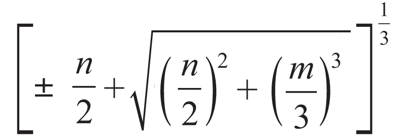
这就是人们所说的卡尔达诺公式。不过，他在书中说明了这个解法是由塔尔塔利亚发明的。除此以外，卡尔达诺还考虑了m<0的情形，并给出了同样完整的解答。而对于缺少一次项的那类三次方程，他可以通过变换转化成上述情形。
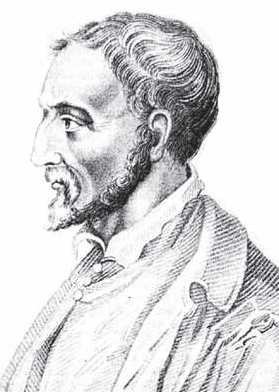
卡尔达诺医生
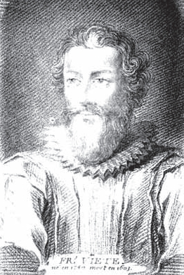
律师兼政客韦达
殊为难得的是，《大术》还介绍了四次方程的一般解法，不过这也不是卡尔达诺给出的，而是他的仆人费拉里的功劳。费拉里（L.Ferrari，1522—1565）出身贫寒，15岁到卡尔达诺医生家为仆，主人看他聪明好学，便教他数学。费拉里找到了将四次方程转换为三次方程的方法，因而成为第一个破解四次方程的数学家。他还代替师傅接受塔尔塔利亚的公开挑战，这回比赛地点是在米兰，获胜的一方也不再是塔尔塔利亚。费拉里出名后，很快变得富有并做了博洛尼亚大学的数学教授，可惜43岁那年死于白砒霜中毒，据称是他贪财的寡居姐姐所为。由于五次和五次以上代数方程之不可解性直到19世纪才由挪威数学家阿贝尔给出证明内，因此在很长一段时间内，这几位意大利人的工作和故事一直被同行们津津乐道。
从以上叙述可以看出，虽然塔尔塔利亚和费拉里解决具体问题的能力或许较强，但卡尔达诺所扮演的角色更为重要，他是那种欧几里得式的人物。这样的人物在16世纪的法国也有一位，那就是韦达（F.Vieta，1540—1603）。韦达被公认为第一个引进了系统的代数符号的人，并对方程论做出了贡献。今天中学数学教程中有“韦达公式”，即一元二次方程ax2 +bx+cx=0的两个根x1、x2与系数之间的关系：
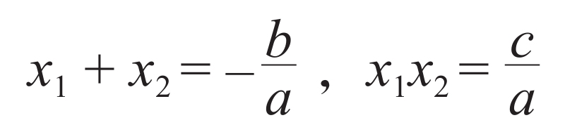
韦达的职业是律师和政客，他曾利用自己的数学才华，破译了与法军交战的西班牙国王的密令。韦达在政途黯淡期间潜心研究数学，他从丢番图的著作中获得了使用字母的想法。韦达后来被誉为现代代数符号之父，虽然他本人启用的符号大多被取代，例如，他曾经用辅音字母表示已知数，用元音字母表示未知数，并用～表示减号。在今天数学书中被广泛使用的符号体系中，有15世纪引入的加号（+）、减号（–）和乘幂表示法，16世纪引入的等号（=）、大于号（>）、小于号（<）、根号（
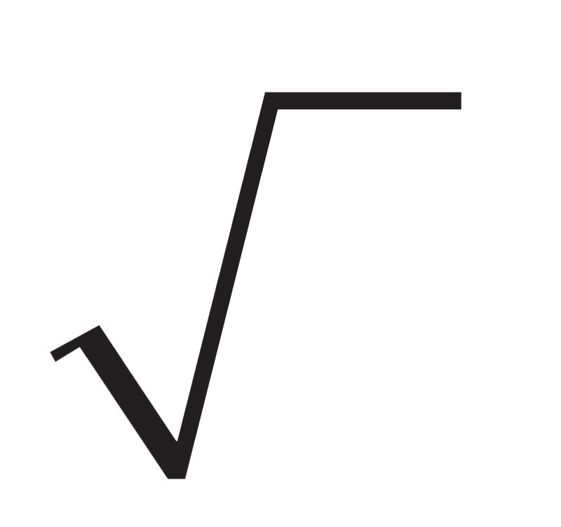
），17世纪引入的乘号（×）、除号（÷）、已知数（a、b、c）、未知数（x、y、z）和指数表示法，等等。进入17世纪以后，各式各样的数学理论和分支如雨后春笋般茁壮成长，我们不可能一一分析，甚至不得不错过一些比较重要的数学家。下一个我们要谈论的对象是法国数学家德扎尔格（Desargue，1591—1661），正是他回答了阿尔贝蒂提出的有关透视法的数学问题，并建立起射影几何学的主要概念，他本人也成为这个数学分支的奠基人。德扎尔格本是军人出身，后来靠做工程师和建筑师谋生，而在梅森（M.Mersenne，1588—1648）神甫组织的巴黎数学沙龙里，他赢得了年轻的数学家笛卡尔、帕斯卡尔等人的尊敬。
德扎尔格对几何学的一大贡献是，他提出了“无穷远点”的概念，从而使两条直线平行和相交完全统一（平行即相交于无穷远点，这对第七章将要讲到的非欧几何学非常重要），进而得出同一平面上的两条直线必相交的结论，这是射影几何学赖以建立的基本观点。此外，他只关心几何图形的相互关系，而不涉及度量，这也是几何学的一种新思想。所谓德扎尔格定理是指，假如平面或空间中的两个三角形的对应顶点的连线共点，那么它们的（三组）对应边（延长线）的交点共线。
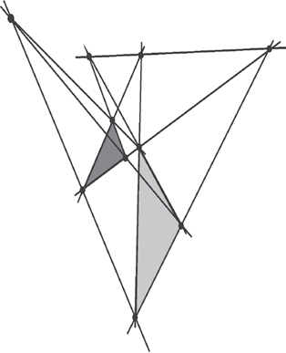
德扎尔格定理
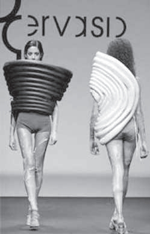
依据德扎尔格曲线设计的时装秀
如果从画家们的角度出发，这个定理可以这样叙述：假如两个三角形可以通过一个外部的点透视地看到（恰好处于锥体的两个不同截面），则当它们没有两条对应边平行时，对应边的交点共线。事实上，那个世纪的几何学研究主要是沿着两条道路实现突破的：一条是德扎尔格所走的道路，可谓几何方法的一种综合，但却是在更一般的情况下进行的；另一条道路则更加辉煌，就是利用代数的方法来研究几何，即笛卡尔建立起来的解析几何。
从本质上讲，近代数学就是关于变量的数学，这也是它与古代数学的区别所在，后者是关于常量的数学。文艺复兴以来资本主义生产力的发展，对科学技术提出了全新的要求。例如，机械的普遍使用引发了对机械运动的研究；由贸易带动的航海业的发展要求更精确和便捷地测定船舶的位置，这需要研究天体运动的规律；武器的改进则推动了弹道问题的研究。所有这些问题都表明，对运动和变化的研究已成为自然科学研究和数学研究的中心问题。
变量数学的第一个里程碑是解析几何的发明。作为几何学的一个分支，解析几何的基本思想是在平面中引进坐标的概念，因此它又被称为坐标几何。所谓坐标是通过坐标系赋予的，设A、B是平面上任意两条相交直线，其交点O称为原点，A和B称为坐标轴，在A轴和B轴方向确立单位坐标以后，坐标系就建立起来了。每一对有序实数（x，y）都对应坐标平面上的一个点，反之亦然。
用解析几何的方法，我们可以将任何一个形如
f（x，y）=0
的代数方程（通过方程的解）与平面上的一条曲线对应起来。这样一来，一方面，几何问题也就可以转化为代数问题，再通过对代数问题的研究就可以发现新的几何结果。另一方面，代数问题也就有了几何意义的解释。
虽说14世纪的法国数学家奥雷斯姆（N.Oresme，约1320—1382）借用“经度”和“纬度”这两个地理学术语来描绘他的图形，16世纪比利时出生的荷兰地理学家麦卡托（G.Mercator，1512—1594）更是利用相互直交的经纬线，绘制出有史以来第一本地图册。说到Atlas（地图册），这个英文词汇就是由麦卡托率先使用的，他精通那个时代的数学和物理并能应用自如，还是一位出色的雕刻师和书法家。可是，这两位均没有将数和形相对应的概念。解析几何的真正发明应该归功于另外两位法国数学家——笛卡尔和费尔马。
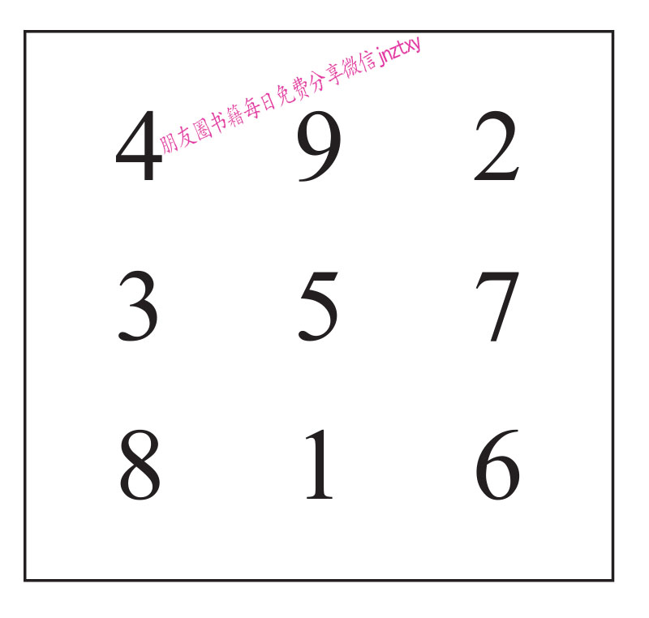
麦卡托绘制的世界地图
必须指出的是，无论笛卡尔还是费尔马，他们最初建立的都是斜坐标系，而只是把直角坐标系（即A和B相互垂直，A是水平的，B是竖立的）作为一种特殊情况（也都提到了三维坐标系的可能性）。从那以后，人们习惯于称直角坐标系为笛卡尔坐标系，但这不等于说笛卡尔的工作比费尔马更早或更高明。他们研究坐标几何的方法的不同之处在于笛卡尔背离了希腊的传统，并发现了代数方法的威力，而费尔马则认为自己的工作只是重新表述了阿波罗尼奥斯的发现。费尔马在强调轨迹的方程和用方程表示曲线的思想方面无疑更为明显，他直接给出了直线、圆、椭圆、抛物线、双曲线等方程的现代形式。
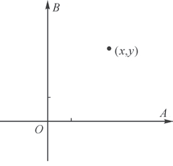
笛卡尔坐标系
虽然笛卡尔和费尔马发明解析几何的方式和目的不尽相同，他们却被卷入了优先权之争。1637年，笛卡尔以其哲学著作《方法论》附录的形式发表了《几何学》，其中包括了解析几何的全部思想。而费尔马虽然早在1629年就已经发现了坐标几何的基本原理，却一直到去世（1665）都没有发表（他的其他许多数学发现也是一样）。幸好他们都是法国人，这个矛盾才不至于闹得太大。但费尔马生前得到了帕斯卡尔的支持，而德扎尔格则站在笛卡尔一边。
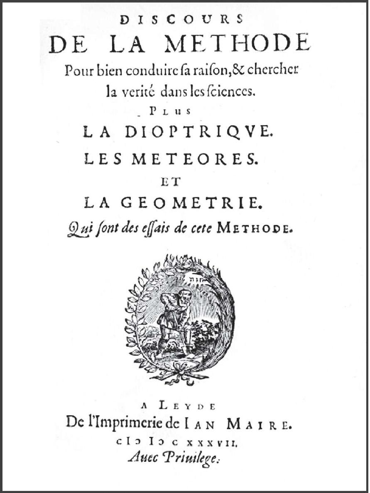
《方法论》扉页，注明《几何学》作为附录三
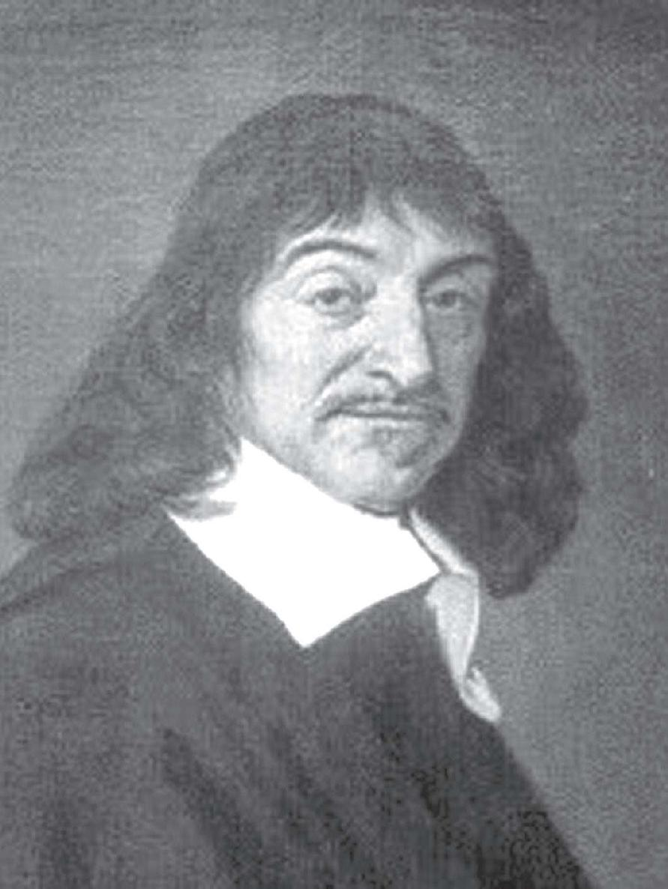
近代哲学之父笛卡尔
笛卡尔和费尔马建立的坐标系并不是唯一的坐标系。1671年，即费尔马的坐标几何原理发表两年之后，英国的牛顿也建立了自己的坐标系——极坐标系。用现代的数学语言来表达极坐标系就是，给定一个平面，设O是平面上的一点，A是从O点出发的一条半直线，则平面上任何一点B都可以通过点O到B的距离r，以及OB与OA的夹角θ来确定，有序数组（r，θ）就是B点的极坐标。上中学时我们已经知道，有些几何图形用极坐标比用笛卡尔坐标表现更为简单，如阿基米德螺线、悬链线、心脏线、三叶或四叶玫瑰线，等等。
解析几何不仅把代数方法应用于几何，也把变量引入了数学，为微积分的创立开辟了道路，但真正起关键作用的还是函数概念的建立。1642年，即笛卡尔发表解析几何原理的5年以后，牛顿出生在英格兰林肯郡的一个小村庄，那一年伽利略去世了。身为遗腹子的牛顿并非神童，但他爱读课外书，并从中学起开始记笔记（这很重要，高斯也有这个习惯）。有意思的是，牛顿将这些笔记本称为“废书”（waste book），后来又被他带到剑桥大学记录力学和数学笔记，包括微积分和万有引力在内的研究心得都在其中。
大约在牛顿22岁那年，他开始在废书中记录有关微积分的研究，他一直用“流量”（fluent）一词来表示变量之间的关系。比他稍晚的德国数学家莱布尼茨则率先用“函数”（function）一词来表示任何一个随着曲线上的点的变动而变动的量，至于该曲线本身，莱布尼茨认定是由一个方程式给出的。值得一提的是，用记号f（x）来表示函数是由瑞士数学家欧拉在1734年引进的，那时函数已成为微积分学的中心概念。
其实，微积分特别是积分学的萌芽，可以追溯到古代。前文已经谈到，面积、体积的计算自古以来一直是数学家们感兴趣的问题，在古代希腊、中国和印度的著述中，不乏用无限小的过程计算特殊形状的面积、体积和曲线长的例子。其中包括阿基米德和祖冲之父子，他们成功地求出了球的体积；芝诺的悖论则表明，一个普通的常量也可以被无限划分。在微分学方面，阿基米德和阿波罗尼奥斯分别讨论过螺线和圆锥曲线的切线，但这些都只是个别的或静态的。微积分的创立，主要是为了解决17世纪面临的科学问题。
17世纪上半叶，欧洲接连取得了天文学和力学领域的重大进展。首先是荷兰的一位眼镜制造商发明了望远镜，得知这一消息的意大利人伽利略（Galileo Galilei，1546—1642）迅速造出了高倍望远镜。他用望远镜发现了太阳系的许多不为人知的秘密，从而证实了15世纪波兰天文学家哥白尼（N.Copernicus，1473—1543）的“日心说”是正确的，但这一成就给他带来的是一系列灾难，教会的审讯和迫害导致他双目失明，最后郁郁寡欢而亡。与此同时，比他小7岁的德国天文学家开普勒（J.Kepler，1571—1630）在获取丹麦前辈及同行第谷（Tycho Brahe，1546—1601）的观察数据后，用更精确的数学推导过程证明了“日心说”。
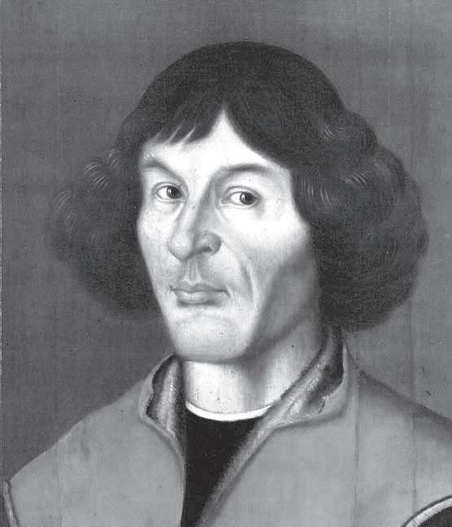
天文学家哥白尼
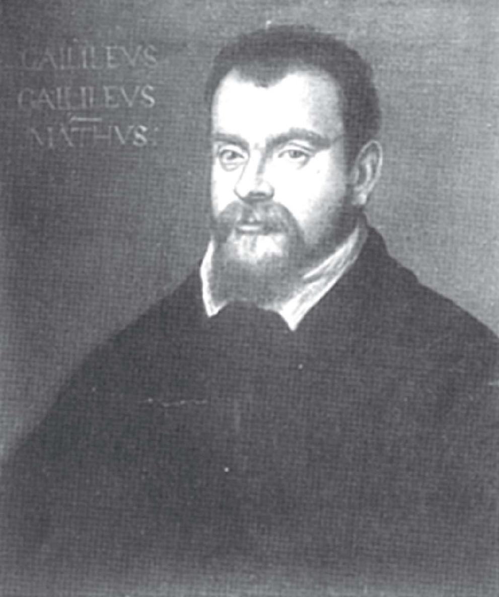
物理学家伽利略
哥白尼也好，第谷也好，都以为行星的运动轨道是圆的（伽利略也未曾否认这一点），开普勒的第一行星运动定律却认定“行星的运动轨道是椭圆的，太阳位于该椭圆轨道的一个焦点上”。他的另外两大运动定律也充分显示出其数学才华（应在伽利略之上）：“由太阳到行星的矢径在相等的时间内扫过的面积相等”，“行星绕太阳公转周期的平方，与其椭圆轨道的半长轴的立方成正比”。幸好，伽利略在他的前半生，即16世纪后期发明了自由落体定律（s=
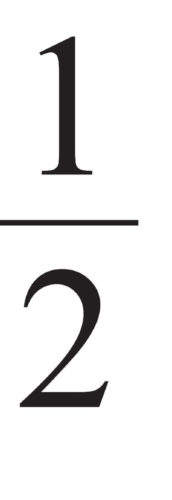
gt2 ）和惯性定律，加上他是科学实验方法的开启者，他的成就才没有落在开普勒后面。无论是开普勒的出生地（斯图加特附近），还是他后来居住的布拉格，都不是欧洲文明的中心，这虽然导致他的工作没有引起足够的重视，但也避免了伽利略遭受过的宗教迫害。然而，这并不等于说他的生活就幸福了，事实上，他是一个体弱多病的早产儿，一个不幸婚姻的后代，他自己也经历了两次糟糕的婚姻。幸亏他有数学和天文学的安慰，由于受毕达哥拉斯和柏拉图的影响，他相信天空符合“数学和谐”的观念，执意找到行星运动的规律。据说有一次他上街买东西，对商人们粗糙地估计酒桶的体积十分不满，因而努力找到了旋转体的体积计算方法，从而把阿基米德发明的球体积公式做了一般的推广。
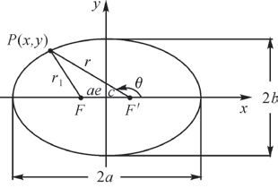
开普勒认定行星的运行轨道是椭圆的
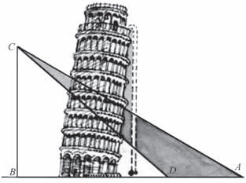
比萨斜塔和传说中的自由落体实验
开普勒所用的方法正是积分学中的“微元法”，用现代数学语言来说，就是用无数无限小的元素之和去求取曲边形的面积和旋转体的体积。相比之下，伽利略的门徒、意大利人卡瓦列利（B.Cavalieri，1598—1647）对数学的研究更为专一，他一生的主要成就就是发展了所谓的“不可分量”理论，即线、面、立体分别是由无限多个点、线和平面组成。不过，卡瓦列利也仅能求出幂函数xn 的定积分，这里n必须是正整数。英国数学家沃利斯则考虑把n换成分数p/q，但他仅得到了p=1时的结果。从年龄上看，沃利斯已经是离牛顿最近的前辈了。
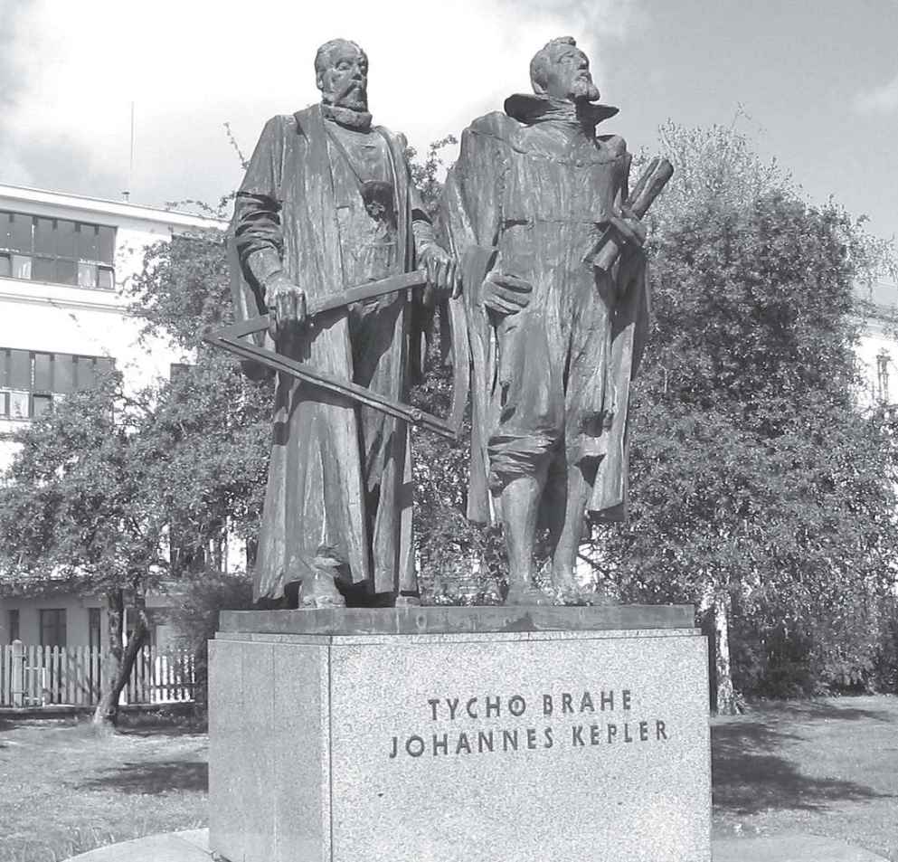
布拉格的第谷和开普勒塑像
沿着微分学的路线追溯，我们也可以列举三位前辈的工作，他们是笛卡尔、费尔马和巴罗——牛顿的老师。笛卡尔和巴罗（I.Barrow，1630—1677）尝试求一般曲线的切线，分别采用了被后人称作“圆法”的代数方法和“微分三角形”的几何方法，费尔马则是在求函数的极值时采用了微分学的方法，唯一的差别是符号不同。实际上，他已经意识到，用这种方法可以求出切线，但因为是在写给梅森神甫的信里，故只是意味深长地说了一句，“我将在另外的场合论述”。可以说，费尔马是上述诸位中最接近成功的一位，现在，该轮到牛顿和莱布尼茨建功立业了。
前文已提及17世纪所面临的新的科学问题，它们与微积分的关系非常密切。例如，曲线的切线既可以用来确定运动物体在某一点的运动方向，也可以求出光线进入透镜时与法线的夹角；函数的极值既可以用来计算炮弹最大射程的发射角，也可以求得行星离开太阳的最近和最远的距离。此外，还有这样一个问题：已知物体移动的距离可表示为时间的函数，求该物体在任何时刻的速度和加速度。可以说，正是这个并不复杂的动力学问题及其逆问题促使牛顿创立了微积分。
牛顿（I.Newton，1642—1727）建立微积分的方法被称为“流数术”，他在剑桥大学上学时便开始研究，在回到家乡林肯郡躲避鼠疫的两年时间里取得了突破。据牛顿本人说，他是在1665年11月发明了“正流数术”（微分学），在次年5月发明了“反流数术”（积分学）。也就是说，牛顿与之前所有的探求微积分学的同行们不同，他把微分和积分作为矛盾的对立面一起考虑并加以解决（他的竞争者莱布尼茨也如此）。有意思的是，从“废书”中我们得知，牛顿虽在剑桥受教于巴罗，却更多地受到在牛津执教的沃利斯和笛卡尔的影响（倒是远在巴黎的莱布尼茨吸取了巴罗工作的精华）。
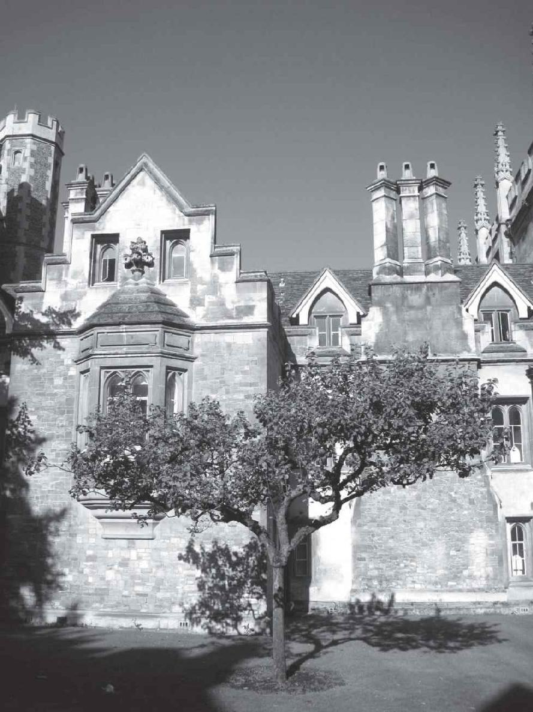
牛顿的苹果树。作者摄于剑桥
1669年，回到剑桥的牛顿在朋友们中间散发了题为“运用无穷多项方程的分析学”的小册子（此前，他曾从运动学的角度出发做过类似的探讨），像那个时候的其他学者一样，他也是用拉丁文写的。牛顿假定，有一条曲线y，它下方的面积是：
z=axn
其中n可以是整数或分数。给定x的无限小增量叫o，由x轴、y轴、曲线和x+o处的纵坐标围成的面积，他用z+oy表示，其中oy是面积的增量。那么，
z+oy=a（x+o）n
利用他自己发明的二项式展开定理，上式等号右边是一个无穷级数。将这个方程与前面的方程相减，用o除以方程的两边，略去仍然含有o的项，得到
y=naxn–1
用现代的数学语言讲就是，面积在任意x点的变化率是曲线在x处的y值；反之，如果曲线是y=naxn–1 ，那么它下方的面积就是z=axn ，这正是微分学和积分学的雏形。两年以后，牛顿在一本《流数法与无穷级数》的书里给出了更广泛且明确的说明。他把变量叫作“流”（fluent），把变量的变化率叫作“流数”（fluxion），“流数术”一说由此而来。
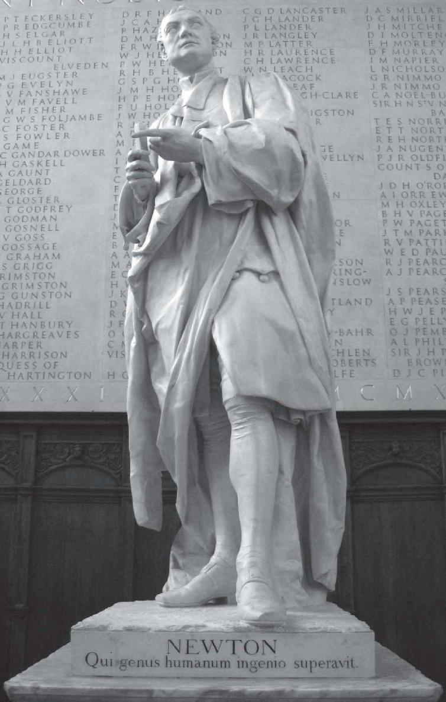
三一学院礼拜堂内的牛顿塑像。作者摄于剑桥
与此同时，牛顿也将他的正、反流数术应用于切线、曲率、拐点、曲线长度、引力和引力中心等问题的计算。可是，牛顿也像费尔马一样不愿意发表结果，《运用无穷多项方程的分析学》小册子是在友人的反复催促下才于1711年发表，而《流数法与无穷级数》一书则是在他死后的1736年才于正式出版。即使较早问世的《自然哲学的数学原理》（1687），也披上了几何学的外衣，没有被学术界及时认可。但这并不妨碍此书成为近代最伟大的科学著作，因为仅是万有引力定律的建立和开普勒三大行星定律的严格数学推导就足以让它流芳百世了。
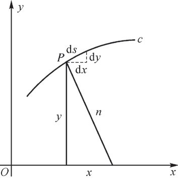
莱布尼茨的微分学原理
相比之下，莱布尼茨（G.W.Leibniz，1646—1710）的微积分理论虽然发现得比牛顿晚，却发表在先（1684和1686），因此才引发了一场旷日持久的优先权之争。与牛顿流数术的运动学背景不同，莱布尼茨是从几何学的角度出发的。确切地说，他最初（1673）是从帕斯卡尔的一篇谈论圆的论文中获得灵感的。如下图所示，在曲线c上任意一点P作一个特征小三角形（斜边与切线平行），再利用相似三角形的边长比例关系推导可得：
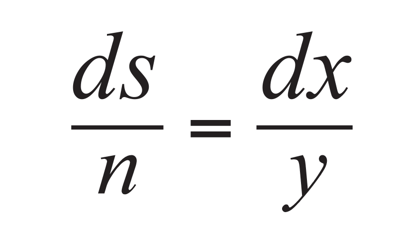
这里n表示曲线c在P点的法线，由此求和可得：
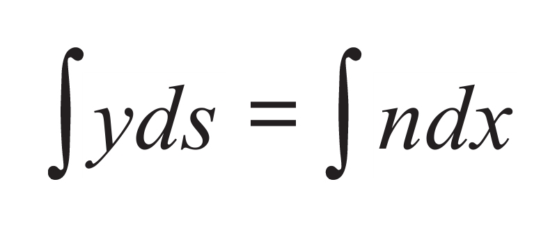
不过，由于当时他是用语言而不是用公式来描述的，因此较为模糊。4年以后，莱布尼茨才在一篇手稿中明确陈述了微积分基本定理。
早在1666年，莱布尼茨就在《论组合的艺术》一文中考察过下列平方数数列：
0，1，4，9，16，25，36，…
其一阶差和二阶差分别是1，3，5，7，9，11，…和2，2，2，2，2，…。他注意到一阶差的和对应于原数列，求和与求差成互逆关系，由此他联想到微分与积分的关系。利用笛卡尔坐标系，他把曲线上无穷多个点的纵坐标表示成y的数列，相应的横坐标的点就是x的数列。如果以x作为确定纵坐标的次序，再考虑任意两个相继的y值之差的数列，莱布尼茨惊喜地发现，“求切线不过是求差，求积不过是求和”。
接下来的进展并不顺利，莱布尼茨从离散的差值逐渐过渡到任意函数的增值，1675年他引进了十分重要的积分符号∫，次年他得到了幂函数的微分和积分公式。至于莱布尼茨的微积分基本定理，用现代数学语言描绘是这样的：为了求出在纵坐标为y的曲线下方的面积，只需求出一条纵坐标为z的曲线，使其切线的斜率为
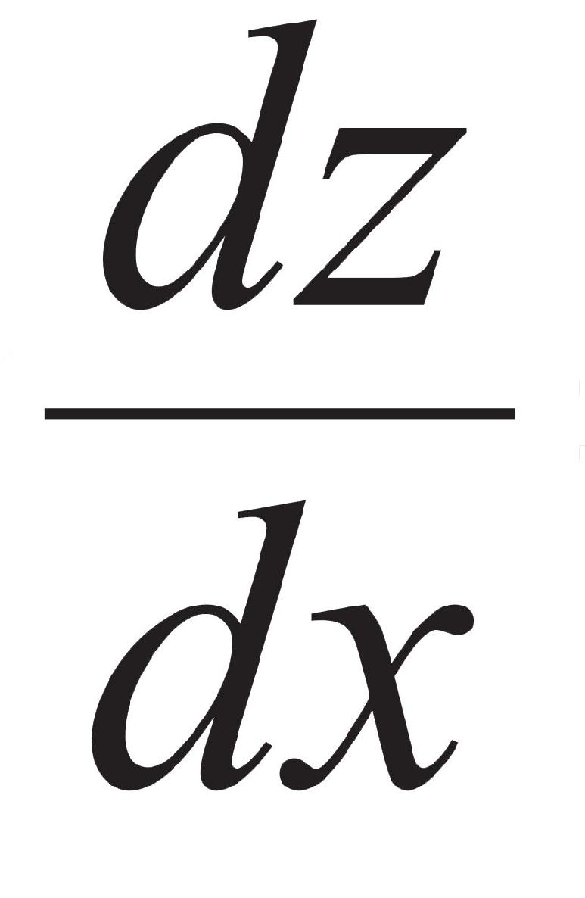
=y。如果是在区间[a, b]上，由[0, b]上的面积减去[0, a]上的面积，就可得到：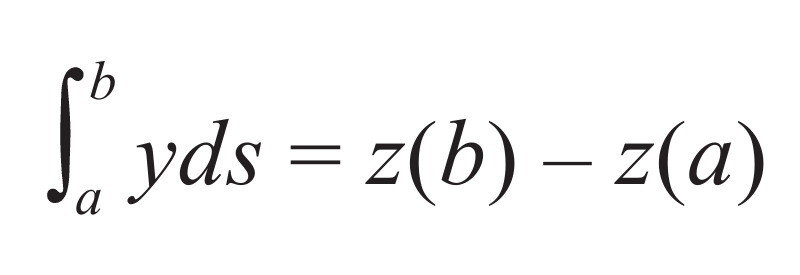
出于众所周知的原因，这个公式也被称作牛顿—莱布尼茨公式。
有意思的是，莱布尼茨对数学最初的热情来自一种政治野心。那时候，德意志就像2000多年前中国的春秋战国时期那样，处于诸侯割据状态。有一年夏天，莱布尼茨在一次旅途中遇到了美因茨选帝侯（有权选举罗马皇帝的诸侯，美因茨因为古腾堡在那里发明活字印刷术而闻名遐迩）的前任首相。这位睿智开明的首相尽管已经卸任，但仍有着巨大的影响力，他对这位学识渊博、谈吐幽默的年轻人印象深刻，就把莱布尼茨推荐给选帝侯。
其时，法国已成为欧洲的主要力量，太阳王路易十四的势力如日中天，随时可能进犯北方邻国。鉴于此，身为选帝侯法律顾问助手的莱布尼茨不失时机地献上一条锦囊妙计。这条妙计是，用一个让法国征服埃及的诱人计划去分散路易十四对北方的注意力。随后，26岁的莱布尼茨被派往巴黎，在那里度过了4个年头。虽说那时笛卡尔、帕斯卡尔和费尔马均已过世，但莱布尼茨却幸运地遇到了从荷兰来的数学家惠更斯（C.Huygens，1629—1695），后者也是钟摆理论和光的波动理论的创立者。
莱布尼茨很快就意识到自己在科技落后的德国所受教育的局限性，因此虚心地学习，对数学的兴趣尤甚，并得到了惠更斯的悉心指导。由于莱布尼茨的勤奋和天赋，也由于那个时代的数学基础十分有限，当他离开巴黎的时候，已经完成了主要的数学发现（原先的使命则被搁置脑后）。他先是发明了二进制，接着改进了帕斯卡尔加法器，制造出第一台可进行乘除和开方运算的机械计算机。当然，他最重要的贡献无疑是在无穷小的计算方面，即微积分的发明。
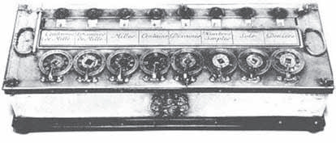
帕斯卡尔的加法器
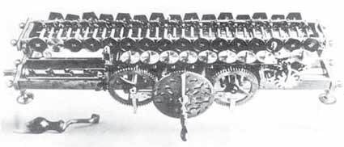
莱布尼茨的计算机
这是科学史上划时代的贡献，正是由于这一发明，数学开始在自然科学和社会生活中扮演极其重要的角色，也给后来喜欢数学的人提供了成千上万的工作岗位，就如同20世纪电子计算机的发明一样。除此以外，莱布尼茨还创立了形式优美的行列式理论，并把有着对称之美的二项式定理推广到任意变量上。最让我们感到愉悦的可能要数他27岁那年（1673）在伦敦旅行期间所发现的圆周率的无穷级数表达式，即
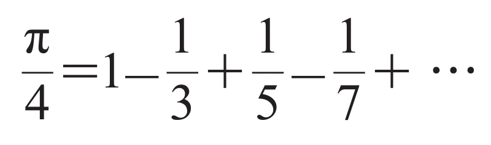
有了这个公式，自古以来关于圆周率的精确计算的人为竞争便永远结束了。
莱布尼茨从伦敦返回巴黎后不久，他的赞助人便去世了，他多次申请法国科学院和外交官的职位未果，只好做家庭教师谋生。1676年10月，30岁的莱布尼茨接受了布伦瑞克公爵的邀请，北上汉诺威担任公爵府的法律顾问兼图书馆馆长，并在那里度过余生。莱布尼茨继续潜心研究数学、哲学和科学，成就斐然，并因此成为欧洲诸多皇室的座上宾。
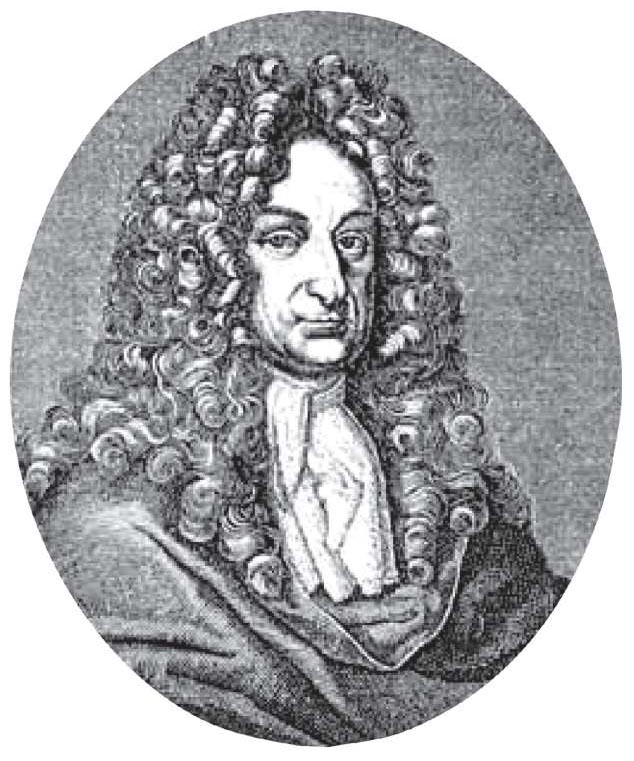
牛顿的竞争对手莱布尼茨
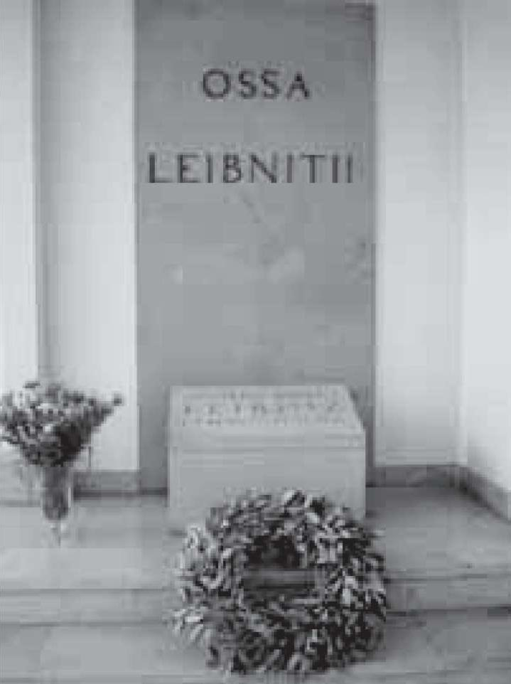
莱布尼茨骨冢。作者摄于汉诺威
最后，我想谈谈数学传承（并非师徒意义上的），这与艺术家之间的心灵感应或启迪是一样的。如同欧拉悉心研究了费尔马的数学遗产，莱布尼茨也对帕斯卡尔的研究尤为关注。他创立微积分的最初灵感来自帕斯卡尔三角形，他的可进行乘除和开方运算的计算机也是对帕斯卡尔加法器的改进；帕斯卡尔三角形是针对两个变量的二项式系数，莱布尼茨则将其推广到任意多个变量上。在哲学和人文领域，莱布尼茨也追随着帕斯卡尔的脚印，两人都终生未婚。